Procesiranje slik za meritve v strukturni dinamiki#
Table of Contents
Vsi potrebni paketi so navedeni v requirements.txt:
pip install -m requirements.txt
Priprava paketov in nekaterih funkcij:
import warnings
warnings.filterwarnings('ignore')
warnings.filterwarnings("ignore", category=DeprecationWarning)
import numpy as np
import matplotlib.pyplot as plt
import matplotlib.patches as patches
from orodja import plot_mode_shape
from ipywidgets import interact
import lvm_read
import pyidi
from sdypy import EMA as pyEMA
from sdypy import FRF as pyFRF
---------------------------------------------------------------------------
ModuleNotFoundError Traceback (most recent call last)
Cell In[1], line 14
11 from ipywidgets import interact
13 import lvm_read
---> 14 import pyidi
15 from sdypy import EMA as pyEMA
16 from sdypy import FRF as pyFRF
ModuleNotFoundError: No module named 'pyidi'
Slikovne meritve#
Postavitev eksperimenta:

Vzbujanje z modalnim kladivom:
Datoteke s slikami:
cam_fname = 'data/camera.cih'
lvm_fname = 'data/acceleration.lvm'
Odpiranje posnetka s paketom pyidi:
video = pyidi.video_reader.VideoReader(cam_fname)
frames = video.get_frames() # (N, h, w)
frames.shape, frames.dtype
((3750, 40, 640), dtype('uint8'))
plt.plot(frames[:, 25, 200])
[<matplotlib.lines.Line2D at 0x7f3e47bad310>]
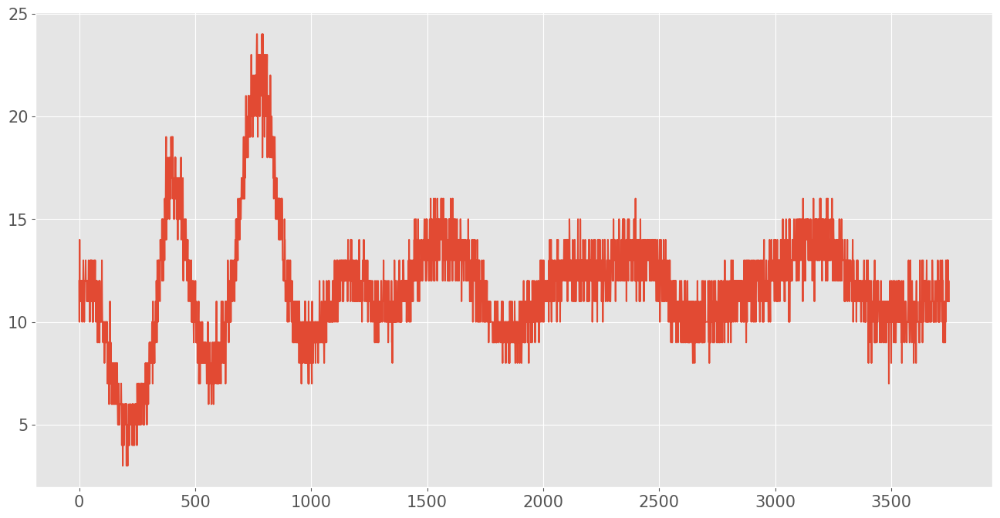
frames.shape
(3750, 40, 640)
frames.shape[1] * frames.shape[2] * 12 / 8 * 20000 / 1e6
768.0
image_nr = 200
plt.figure()
plt.imshow(frames[image_nr], cmap='gray')
plt.grid(False)
plt.show()
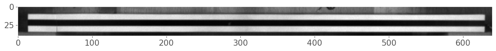
Posnetek je prilagojen prikazu in je zato slabše kavlaitete. Za natančne meritve običajno zajamemo zelo veliko količino podatkov.
Parametri zajema#
Parametri nastavitve kamere so zapisani v atributu info:
video.info['Color Bit']
8
Osvetlitev#
Ustrezna osvetlitev je eden najpomembnejših parametrov pri zajemu slik s hitro kamero.
Pri oceni ustreznosti osvetlitve si lahko pomagamo s hitrogramom sivinskih vrendosti:
selected_frame = 0
x0 = 100 # position of observed rectangle
y0 = 9
d = 25
roi = frames[selected_frame, y0:y0+d, x0:x0+d]
fig, ax = plt.subplots(2)
ax[0].imshow(frames[selected_frame], cmap='gray')
ax[1].hist(roi.flatten(), bins=50);
# Formating
ax[0].add_patch(patches.Rectangle((x0, y0), d, d, fill=False, color='r', linewidth=2))
ax[0].grid(False)
ax[1].set_xlabel('Grayscale value [/]')
ax[1].set_ylabel('n pixels [/]')
plt.tight_layout()
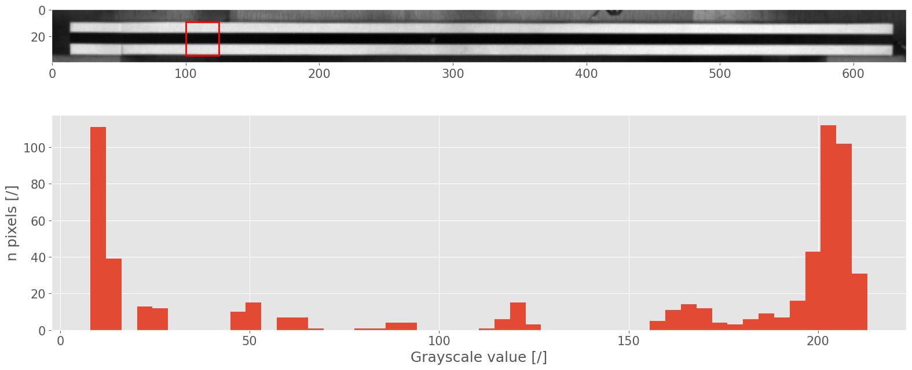
Priprava površine merjenca#
Za delovanje metod določanja pomikov s slik na osnovi gradientov sivinskih vrendosti je nujno, da je površina merjenca ustrezno pripravljena.
Pogosto na opazovano površino apliciramo visokokontrasntni vzorec pack (speckle) ali črt. Identifikacija pomikov je najzaneslivejša v smeri gradienta sivinskih vrendosti.
frames[0].shape
(40, 640)
grad0, grad1 = np.gradient(frames[0].astype(float)) # gradient computation
grad0.shape
(40, 640)
plt.figure()
plt.imshow(grad0, cmap='gray')
<matplotlib.image.AxesImage at 0x7f3e4572dd10>
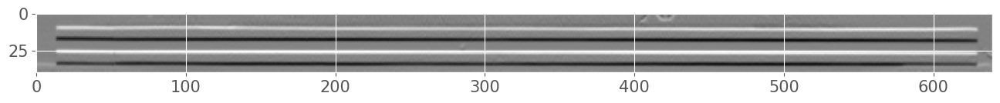
plt.plot(grad1[25])
[<matplotlib.lines.Line2D at 0x7f3e463f8b90>]
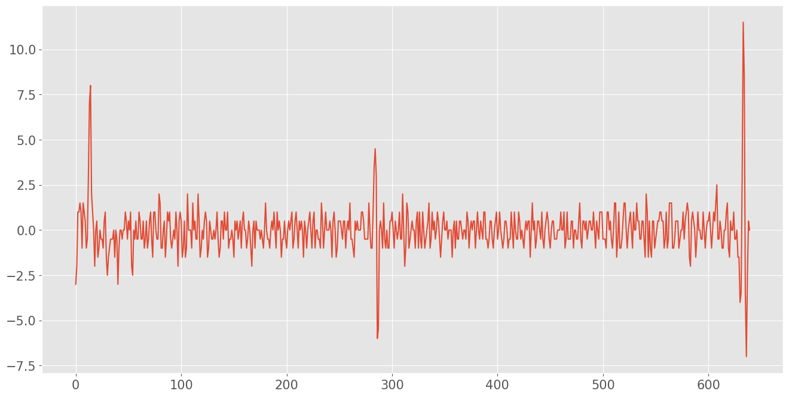
plt.plot(grad0[:, 200])
[<matplotlib.lines.Line2D at 0x7f3e45f78050>]
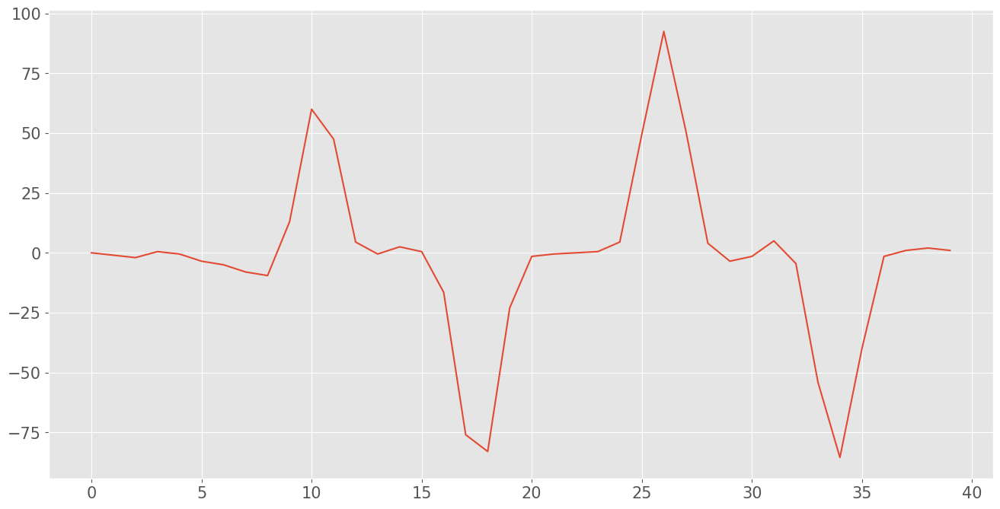
x0 = 200 # position of cross section
fig, ax = plt.subplots(2)
ax[0].imshow(video.get_frames()[selected_frame], cmap='gray')
ax[1].plot(video.get_frames()[selected_frame, :, x0], label='Grayscale value')
ax[1].plot(grad0[:, x0], label='Gradient')
# Formating
ax[0].vlines(x0, 0, 40, colors='r', linewidth=3)
ax[0].text(x0+10, -5, 'Cross section')
ax[0].arrow(x0+50, 5, -35, 20, color='r', width=3)
ax[0].grid(False)
ax[1].set_xlabel('Image height [px]')
ax[1].set_ylabel('Grayscale/gradient value [/]')
plt.legend()
plt.tight_layout();
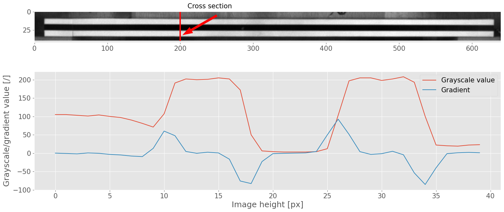
Pogoste težave pri slikovnih meritvah#
Neustrezno izostrena slika#
layout_fname = r'data/focus.cih'
video_layout = pyidi.video_reader.VideoReader(layout_fname)
plt.imshow(video_layout.get_frames()[0], cmap='gray')
plt.grid(False)
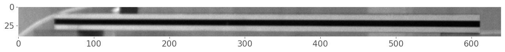
Neustrezna osvetlitev#
light_fname = r'data/illumination.cih'
video_light = pyidi.video_reader.VideoReader(light_fname)
%matplotlib ipympl
selected_frame = 0
y0, d = 9, 20
def show(x0):
roi = video_light.get_frames()[selected_frame, y0:y0+d, x0:x0+d*2]
fig, ax = plt.subplots(2)
ax[0].imshow(video_light.get_frames()[selected_frame], cmap='gray')
ax[1].hist(roi.flatten(), bins=50);
# Formating
ax[0].add_patch(patches.Rectangle((x0, y0), d*2, d, fill=False, color='r', linewidth=2))
ax[0].grid(False)
ax[1].set_xlabel('Grayscale value [/]')
ax[1].set_ylabel('n pixels [/]')
ax[1].set_xlim([0, 260])
plt.tight_layout()
plt.show()
interact(show, x0=100);
%matplotlib inline
Določitev pomikov na slikah z metodo optičnega toka#
Svetlost na sliki se ohranja: $\( f(x, y, t) = f(x + \Delta x, y + \Delta y, t+ \Delta t). \)$
Sledi enačba poenostavljene metode optičnega toka za posamezno točko na sliki: $\( s(x_j,y_k,t)=\frac{f_0(x_j,y_k)-f(x_j,y_k,t)}{|\nabla f_0|} \)$
\(s(x_j,y_k,t) \dots\) pomik točke v smeri lokalnega gadienta sivinskih vrednosti
Računamo pomike glede na referenčno sliko:
reference_image = np.average(video.get_frames()[:10], axis=0)
Potrebujemo slike gradienta v smeri x (1) in y (0):
grad0, grad1 = np.gradient(reference_image)
G = np.sqrt(grad0**2 + grad1**2)
Za obdelavo so primerne točke z visoko vrednostjo gradienta:
border = 20
border_h = 12
n = 2 # število vrstic mreže točk
N = 16 # število stolpcev mreže točk
w = np.arange(border, reference_image.shape[1]-border, np.abs(border - reference_image.shape[1]-border)//N) # stolpci mreže točk
h = np.argsort(np.abs(grad0[border_h:-border_h, w]), axis=0)[-n:, :].T + border_h # vrstice mreže točk - z najvišjo absolutno vrednostjo gradienta
inds = np.column_stack((h.flatten(), w.repeat(n)))
inds
array([[ 26, 20],
[ 17, 20],
[ 17, 60],
[ 26, 60],
[ 18, 100],
[ 26, 100],
[ 18, 140],
[ 26, 140],
[ 18, 180],
[ 26, 180],
[ 18, 220],
[ 26, 220],
[ 18, 260],
[ 26, 260],
[ 18, 300],
[ 26, 300],
[ 18, 340],
[ 26, 340],
[ 18, 380],
[ 26, 380],
[ 26, 420],
[ 18, 420],
[ 26, 460],
[ 18, 460],
[ 26, 500],
[ 18, 500],
[ 26, 540],
[ 18, 540],
[ 27, 580],
[ 18, 580]])
plt.figure()
plt.imshow(grad0, cmap='viridis')
plt.scatter(inds[:, 1], inds[:, 0], color='r', s=20)
plt.grid(False)
plt.xlabel('Image width [px]')
plt.ylabel('Image height [px]')
plt.title('Gradient slike in izbrane točke')
plt.tight_layout()
plt.show()
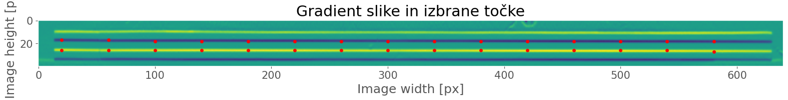
inds.shape
(30, 2)
rows, columns = inds.T
frames = video.get_frames()
Enačba optičnega toka:
d_of = ((reference_image[rows, columns] - frames[:, rows, columns]) / np.abs(G[rows, columns])).T
d_of.shape
(30, 3750)
fig, ax = plt.subplots()
ax.plot(d_of[0], label='Direction 0 (y)');
ax.set_xlabel('Image [/]]')
ax.set_ylabel('Displacement [px]')
plt.legend()
<matplotlib.legend.Legend at 0x7f3dfe136490>
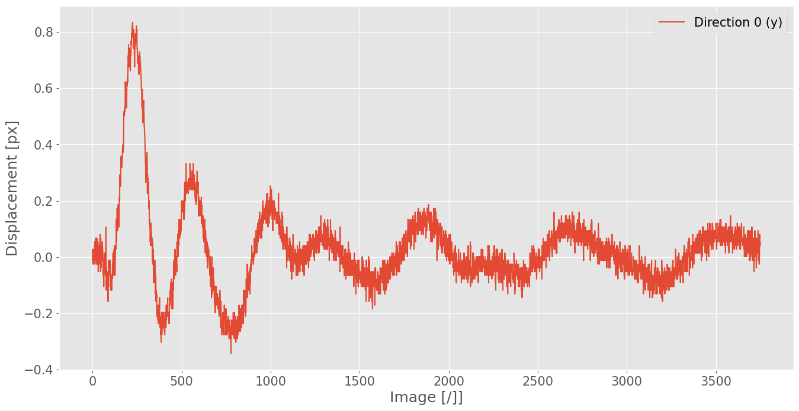
Izračun pomikov s pyidi:
sof_analiza = pyidi.SimplifiedOpticalFlow(video) # ustvari objekt za analizo
sof_analiza.set_points(points=inds) # izbira točk za analizo
sof_analiza.configure(mean_n_neighbours=2) # povprečimo sosednji dve točki (v istem stolpcu)
Izračun pomikov z get_displacements():
displacements = sof_analiza.get_displacements() * 8e-5 # pretvorba [piksel] > [m]
100%|█████████████████████████████████████████████████████████| 3750/3750 [00:01<00:00, 1944.07it/s]
Averaging...
Finished!
/mnt/data/pedagoško/_Procesiranje signalov/_VAJE/_PREDLOGE/.venv/lib/python3.13/site-packages/pyidi/methods/_simplified_optical_flow.py:155: UserWarning: Displacement larger than 0.5 pixel
warnings.warn('Displacement larger than 0.5 pixel')
displacements.shape
(15, 3750, 2)
location = 1
fig, ax = plt.subplots()
ax.plot(displacements[location, :, 0], label='Direction 0 (y)');
ax.set_xlabel('Image [/]]')
ax.set_ylabel('Displacement [m]')
plt.legend()
<matplotlib.legend.Legend at 0x7f3dfd09a490>
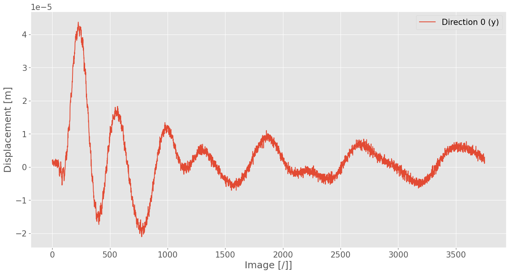
Metoda Lucas-Kanade:#
Če enačbe optičnega toka zapišemo za podobmočje več točk na sliki, dobimo predoločen sistem enačb.
Rešitev predoločenega sistema v smislu najmanjše kvadratične napake nam da pomik podobmočja:
\(f(\mathbf{x}) \dots\) trenutna (premaknjena) slika
\(g(\mathbf{x}) \dots\) referenčna slika
Do enake rešitve pridemo, če rešim opzimizacijski problem, v katerem iščemo parametre \(\Delta \mathbf{x}\), ki premaknjeno trenutno sliko \(f(\mathbf{x} + \Delta \mathbf{x})\) poravnajo z referenčno \(g(\mathbf{x})\):
points_lk = np.column_stack([np.ones_like(w)*video.info['Image Height']//2, w])
lk_analiza = pyidi.LucasKanade(video) # ustvari objekt za analizo z metodo Lucas-Kanade
lk_analiza.set_points(points_lk)
lk_analiza.configure(roi_size=(21, 23), max_nfev=10, int_order=3)
lk_analiza.show_points()
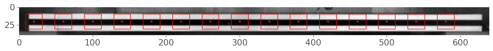
Izrčaun pomikov:
displacements_lk = lk_analiza.get_displacements(processes=2) * 8e-5
/home/dgorjup/.local/share/uv/python/cpython-3.13.9-linux-x86_64-gnu/lib/python3.13/multiprocessing/popen_fork.py:6 7: DeprecationWarning: This process (pid=854592) is multi-threaded, use of fork() may lead to deadlocks in the child. self.pid = os.fork()
--- Starting new analysis ---
Computation start: 2026-05-26 13:16:51.974550
Computation duration: 00:00:44.02
displacements_lk = np.load('data/displacements_lk.npy')
točka = 1
fig, ax = plt.subplots()
ax.plot(displacements_lk[location, :, 0], label='Direction 0 (y), DIC', alpha=0.75)
ax.plot(displacements[location, :, 0], label='Direction 0 (y), optični tok', alpha=0.5);
ax.set_xlabel('Image [/]]')
ax.set_ylabel('Displacement [m]')
plt.legend()
<matplotlib.legend.Legend at 0x7f3dfcf2a490>
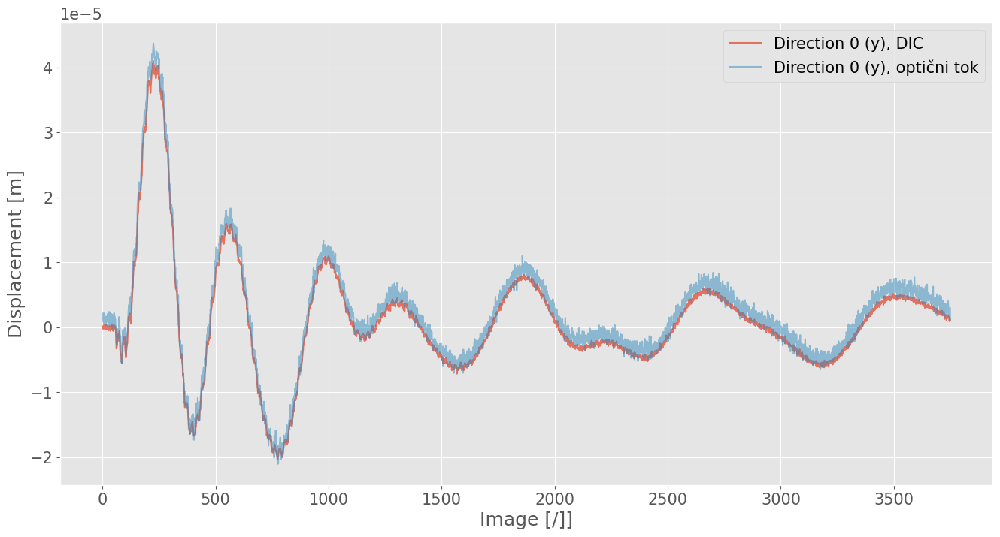
displacements = displacements_lk
Izračun FRF#
Izračun amplitudnih spektrov pomikov:
N = int(video.info['Total Frame'])
dt = 1/int(video.info['Record Rate(fps)'])
1/dt
15000.0
T = dt*N
T
0.25
upper_f_limit = 4000 # zgornja frekvenčna meja, ki nas zanima
freq_cam = np.fft.rfftfreq(N, dt)
fft_cam = np.fft.rfft(displacements[:, :, 0], N) * 2 / N
Opazujemo le frekvence pod mejo upper_f_limit Hz:
fft_cam = np.copy(fft_cam[:, freq_cam<upper_f_limit])
freq_cam = np.copy(freq_cam[freq_cam<upper_f_limit])
Silo vzbujanja smo merili s silomerom.
Da lahko meritiv kombiniaramo, je pomembna ujemajoča frekvenčna ločljivost!
Tudi tukaj se omejimo do upper_f_limit:
lvm = lvm_read.read(lvm_fname)
force = lvm[0]['data'][:-30, 1] # 30 predvzorcev
N = len(force)//4 # dolžina shranjenega videa je 0.25 s
dt = lvm[0]['Delta_X'][1]
fft_force = np.fft.rfft(force, N) *2/N
freq_force = np.fft.rfftfreq(N, dt)
fft_force = np.copy(fft_force[freq_force<upper_f_limit])
freq_force = np.copy(freq_force[freq_force<upper_f_limit])
plt.plot(freq_cam)
plt.plot(freq_force)
[<matplotlib.lines.Line2D at 0x7f3eb2e020d0>]
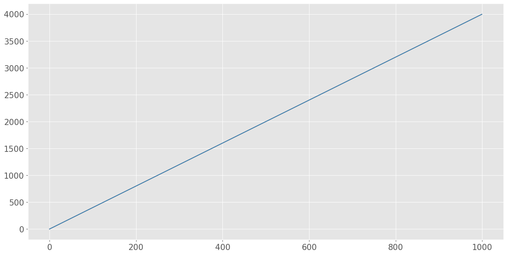
Ker smo zajeli le en segment ne moremo uporabiti natančnejše cneilke FRF:
frf_cam = fft_cam/fft_force
plt.figure()
plt.semilogy(freq_cam, np.abs(frf_cam[točka]));
plt.xlabel('Frequency [Hz]')
plt.ylabel('FRF [m/N]');
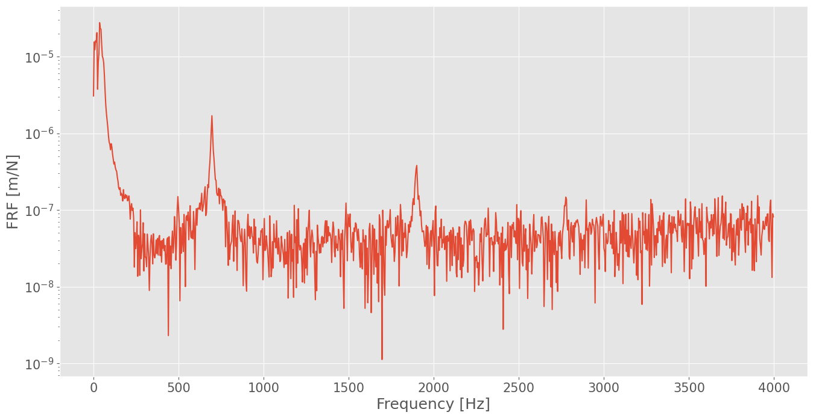
Eskperimentalna modalna analiza (samo slikovna meritev):#
Za eksperimentalno modalno analizo uporabimo paket sdypy-EMA.
cam = pyEMA.Model(frf_cam, freq_cam, pol_order_high=75, upper=upper_f_limit)
Izračun polov modela frekvenčne prenosne funkcije:
cam.get_poles(show_progress=True)
0%| | 0/75 [00:00<?, ?it/s]/mnt/data/pedagoško/_Procesiranje signalov/_VAJE/_PREDLOGE/.venv/lib/python3.13/site-packages/sdypy/EMA/EMA.py:454: RuntimeWarning: invalid value encountered in log
poles = -np.log(sr) / self.sampling_time
100%|███████████████████████████████████████████████████████████████| 75/75 [00:01<00:00, 44.74it/s]
Izbrati moramo pole, ki se zdijo fizikalno smiselni (stabilni).
cam.select_poles()
100%|██████████████████████████████████████████████████████████████| 75/75 [00:00<00:00, 259.83it/s]
<Figure size 1600x800 with 0 Axes>
cam.print_modal_data()
Nat. f. Damping
-----------------------
1) 695.4 0.0016
2) 1898.0 0.0004
Za rekonstrukcijo modela FRF uporabimo metodo LSFD:
frf_rec, shapes_cam = cam.get_constants(FRF_ind='all')
fig, ax = plt.subplots()
ax.semilogy(freq_cam, np.abs(frf_cam[točka]), label='Camera FRF', alpha=0.8)
ax.semilogy(freq_cam[:-1], np.abs(frf_rec[točka]), label='Reconstructed FRF', lw=2)
ax.set_xlabel('frequency [Hz]')
ax.set_ylabel('Receptance')
plt.legend();
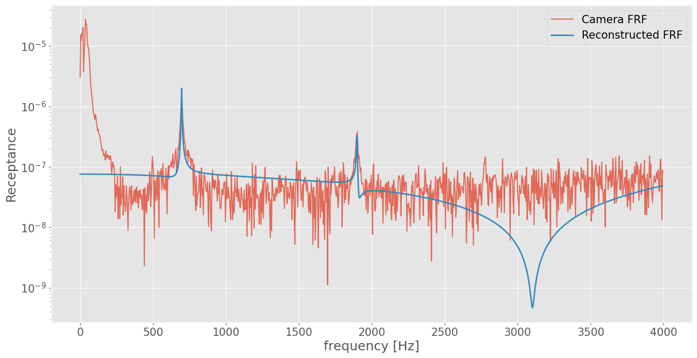
fig, ax = plt.subplots(shapes_cam.shape[1])
for i, a in enumerate(ax):
plot_mode_shape(shapes_cam[:, i], axis=a, frequency=cam.nat_freq[i])
/mnt/data/pedagoško/_Procesiranje signalov/_VAJE/_PREDLOGE/.venv/lib/python3.13/site-packages/matplotlib/cbook.py:1719: ComplexWarning: Casting complex values to real discards the imaginary part
return math.isfinite(val)
/mnt/data/pedagoško/_Procesiranje signalov/_VAJE/_PREDLOGE/.venv/lib/python3.13/site-packages/matplotlib/cbook.py:1355: ComplexWarning: Casting complex values to real discards the imaginary part
return np.asarray(x, float)
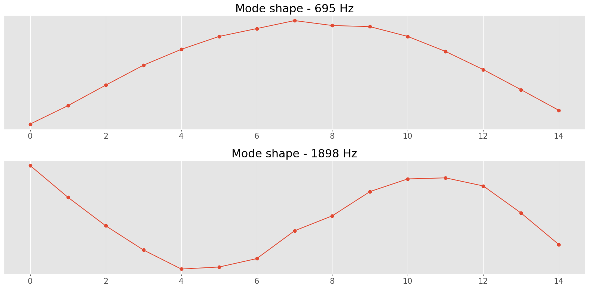
Primerjava z meritivjo pospeškomera#
Pri hibridni metodi kombiniramo pomike s slik z visoko prostorsko ločljivostjo in meritve pospeška z visoko natančnostjo:
hyb_acc = lvm[0]['data'][:-30, 0] * 9.81 # pospeškomer
Za oceno FRF lahk uporabimo paket pyFRF
frf_ = pyFRF.FRF(
sampling_freq=int(np.round(1/dt)),
exc=force,
resp=hyb_acc,
exc_type='f',
resp_type='a')
/mnt/data/pedagoško/_Procesiranje signalov/_VAJE/_PREDLOGE/.venv/lib/python3.13/site-packages/pyFRF.py:421: RuntimeWarning: divide by zero encountered in divide
self.frf_conversion = np.power(-1.j / self.get_w_axis(), 2)
/mnt/data/pedagoško/_Procesiranje signalov/_VAJE/_PREDLOGE/.venv/lib/python3.13/site-packages/pyFRF.py:421: RuntimeWarning: invalid value encountered in divide
self.frf_conversion = np.power(-1.j / self.get_w_axis(), 2)
Opazujemo le frekvenčno območj do upper_f_limit Hz:
freq_acc = frf_.get_f_axis()
frf_acc = frf_.get_FRF(form='accelerance')[0, 0]
frf_acc = frf_acc[freq_acc<upper_f_limit]
freq_acc = freq_acc[freq_acc<upper_f_limit]
Pospeškomer je bil nameščen v točki z indeksom 3:
fig, ax = plt.subplots()
ax.semilogy(freq_cam, np.abs(frf_cam[točka]), label='Camera FRF')
ax.semilogy(freq_acc, np.abs(frf_acc / -(2*np.pi*freq_acc)**2), label='Accelerometer FRF')
ax.set_title('Camera-based response at accelerometer location')
plt.legend();
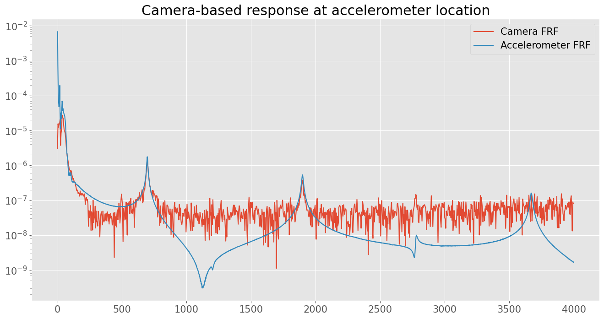